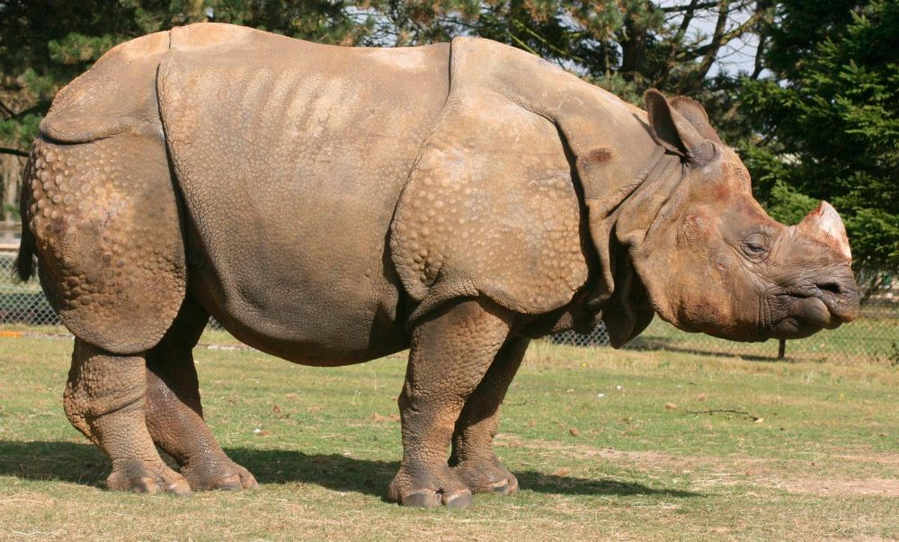
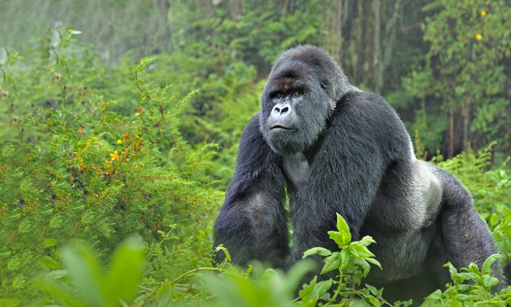
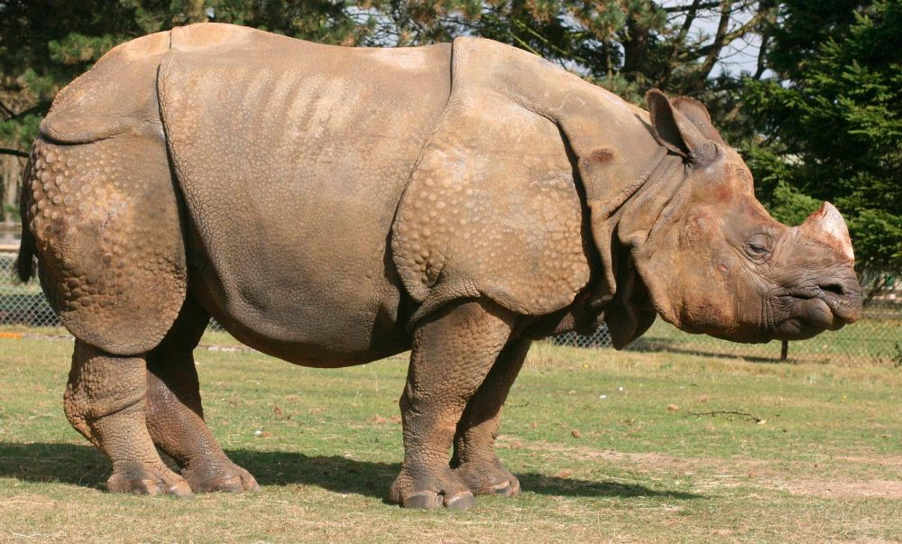
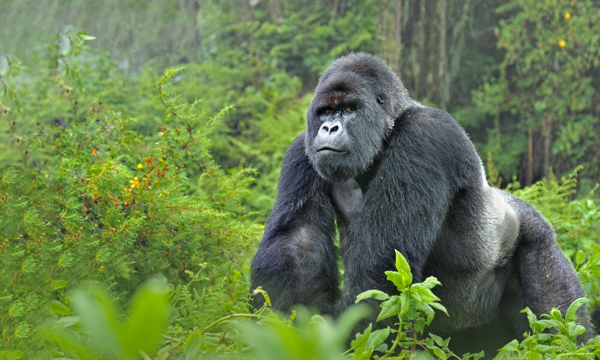

La conservación de la biodiversidad es esencial para mantener el equilibrio de los ecosistemas. Actualmente, muchos animales se enfrentan a la extinción debido a la pérdida de hábitat, la caza y el cambio climático. Es fundamental actuar para proteger estas especies y preservar nuestro planeta.
Para proteger a estos animales, es importante crear reservas naturales, promover la educación sobre la conservación y apoyar las iniciativas que luchan contra la caza furtiva.
El tigre de Bengala es uno de los grandes felinos más majestuosos del mundo. Se encuentra principalmente en India y Bangladesh. La caza furtiva y la destrucción de su hábitat han llevado a su población a disminuir drásticamente.
El rinoceronte de Java es uno de los mamíferos más amenazados del mundo. Su hábitat natural se encuentra en la isla de Java, Indonesia. Solo quedan unas pocas decenas de individuos debido a la caza y la pérdida de hábitat.
El gorila de montaña vive en las montañas de Virunga, en África Central. Esta especie enfrenta amenazas como la caza y la deforestación. La conservación de su hábitat es crucial para su supervivencia.